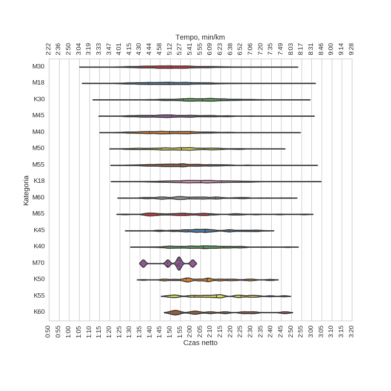
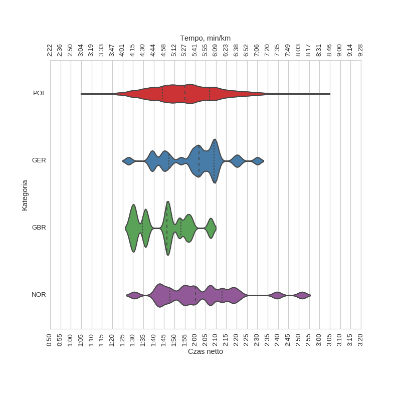
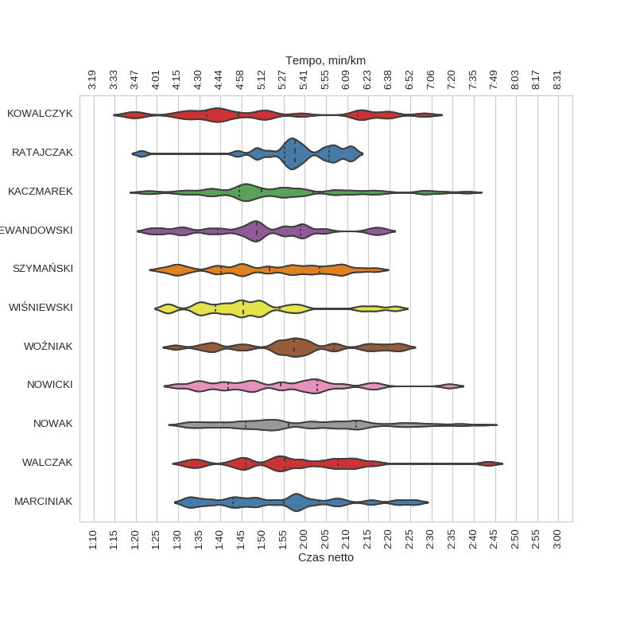
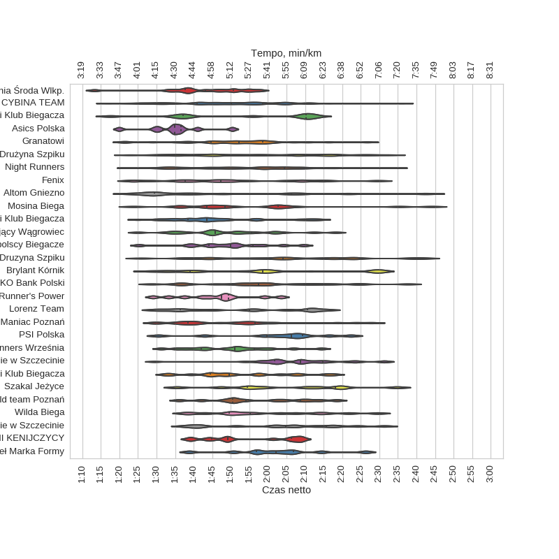
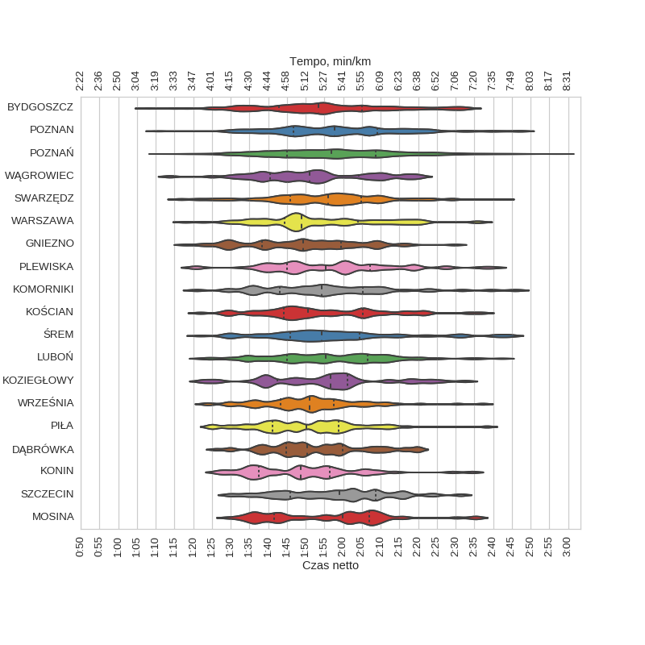

8 Poznan* Półmaraton (2015)
Histogramy
kobiety

mężczyźni

wszyscy

Wykresy rybkowe
wg płci
| czas | count | |||||||
|---|---|---|---|---|---|---|---|---|
| mean | std | min | 25% | 50% | 75% | max | ||
| plec | ||||||||
| K | 2:06:17 | 0:14:46 | 1:14:34 | 1:56:18 | 2:05:56 | 2:15:40 | 3:01:42 | 2158 |
| M | 1:52:02 | 0:15:39 | 1:08:06 | 1:40:43 | 1:50:38 | 2:01:23 | 2:59:51 | 5884 |
wg kategorii

| czas | count | |||||||
|---|---|---|---|---|---|---|---|---|
| mean | std | min | 25% | 50% | 75% | max | ||
| kat | ||||||||
| K18 | 2:05:42 | 0:14:46 | 1:23:40 | 1:55:32 | 2:05:08 | 2:15:31 | 3:01:42 | 913 |
| K30 | 2:06:10 | 0:14:29 | 1:14:34 | 1:56:35 | 2:05:57 | 2:15:14 | 2:56:18 | 859 |
| K40 | 2:07:01 | 0:15:16 | 1:33:23 | 1:55:30 | 2:06:30 | 2:16:32 | 2:50:20 | 238 |
| K45 | 2:08:18 | 0:14:47 | 1:30:42 | 1:59:03 | 2:07:18 | 2:19:15 | 2:38:18 | 79 |
| K50 | 2:08:10 | 0:15:17 | 1:36:40 | 1:57:56 | 2:08:16 | 2:18:22 | 2:40:22 | 36 |
| K55 | 2:13:50 | 0:16:11 | 1:48:46 | 2:02:10 | 2:13:04 | 2:25:02 | 2:46:19 | 22 |
| K60 | 2:11:16 | 0:18:44 | 1:50:46 | 1:55:23 | 2:06:35 | 2:24:03 | 2:46:46 | 10 |
| M18 | 1:50:44 | 0:15:40 | 1:09:32 | 1:39:16 | 1:49:37 | 2:00:22 | 2:58:43 | 1746 |
| M30 | 1:51:52 | 0:15:10 | 1:08:06 | 1:41:17 | 1:50:35 | 2:00:47 | 2:50:07 | 2413 |
| M40 | 1:51:32 | 0:15:41 | 1:18:10 | 1:39:54 | 1:49:50 | 2:00:07 | 2:51:16 | 834 |
| M45 | 1:53:18 | 0:16:13 | 1:17:50 | 1:41:10 | 1:50:42 | 2:02:45 | 2:58:04 | 386 |
| M50 | 1:56:12 | 0:15:48 | 1:23:10 | 1:45:39 | 1:55:41 | 2:06:52 | 2:43:39 | 246 |
| M55 | 1:55:45 | 0:15:04 | 1:23:30 | 1:46:02 | 1:55:07 | 2:04:40 | 2:59:51 | 161 |
| M60 | 2:01:57 | 0:17:23 | 1:27:26 | 1:49:33 | 1:59:24 | 2:12:28 | 2:49:16 | 62 |
| M65 | 2:00:51 | 0:20:59 | 1:27:42 | 1:43:48 | 1:57:26 | 2:09:13 | 2:56:26 | 29 |
| M70 | 1:51:02 | 0:09:09 | 1:36:40 | 1:48:47 | 1:53:54 | 1:54:46 | 2:01:06 | 5 |
wg krajów

| czas | count | |||||||
|---|---|---|---|---|---|---|---|---|
| mean | std | min | 25% | 50% | 75% | max | ||
| kraj | ||||||||
| GBR | 1:44:40 | 0:12:23 | 1:28:49 | 1:34:27 | 1:46:25 | 1:53:13 | 2:07:29 | 12 |
| GER | 1:59:43 | 0:14:23 | 1:27:52 | 1:47:27 | 2:01:47 | 2:09:01 | 2:30:04 | 28 |
| NOR | 2:02:26 | 0:19:11 | 1:30:42 | 1:47:52 | 2:00:12 | 2:12:55 | 2:51:36 | 23 |
| POL | 1:55:49 | 0:16:39 | 1:08:06 | 1:44:12 | 1:55:06 | 2:06:54 | 3:01:42 | 7946 |
wg imion
| czas | count | |||||||
|---|---|---|---|---|---|---|---|---|
| mean | std | min | 25% | 50% | 75% | max | ||
| imie | ||||||||
| ADAM | 1:52:27 | 0:15:32 | 1:13:16 | 1:43:49 | 1:52:09 | 2:02:30 | 2:30:24 | 100 |
| AGNIESZKA | 2:06:34 | 0:14:07 | 1:29:14 | 1:56:05 | 2:05:17 | 2:16:11 | 2:56:18 | 128 |
| ANDRZEJ | 1:52:58 | 0:16:35 | 1:19:35 | 1:43:24 | 1:51:48 | 2:02:20 | 2:36:04 | 115 |
| ANNA | 2:06:59 | 0:14:25 | 1:31:49 | 1:56:48 | 2:07:38 | 2:15:09 | 2:47:25 | 152 |
| BARTOSZ | 1:51:20 | 0:14:09 | 1:15:58 | 1:42:06 | 1:50:52 | 1:59:35 | 2:38:34 | 140 |
| DARIUSZ | 1:51:45 | 0:15:59 | 1:17:51 | 1:41:05 | 1:49:07 | 2:01:45 | 2:36:47 | 102 |
| GRZEGORZ | 1:51:58 | 0:16:26 | 1:17:00 | 1:41:00 | 1:50:42 | 1:59:04 | 2:46:38 | 121 |
| JACEK | 1:53:31 | 0:17:10 | 1:21:58 | 1:40:42 | 1:51:33 | 2:05:22 | 2:42:27 | 153 |
| JAKUB | 1:52:23 | 0:15:59 | 1:13:57 | 1:42:58 | 1:52:20 | 2:02:41 | 2:47:04 | 134 |
| JOANNA | 2:05:47 | 0:15:31 | 1:37:24 | 1:54:26 | 2:04:53 | 2:14:54 | 2:50:51 | 107 |
| KATARZYNA | 2:04:15 | 0:14:33 | 1:33:07 | 1:53:50 | 2:04:30 | 2:13:15 | 2:39:44 | 112 |
| KRZYSZTOF | 1:53:10 | 0:15:17 | 1:13:55 | 1:43:29 | 1:52:13 | 2:01:48 | 2:41:53 | 278 |
| MACIEJ | 1:54:03 | 0:15:21 | 1:14:00 | 1:43:08 | 1:53:46 | 2:01:49 | 2:43:05 | 220 |
| MAGDALENA | 2:07:28 | 0:15:27 | 1:31:31 | 2:00:17 | 2:08:42 | 2:16:12 | 2:46:19 | 102 |
| MARCIN | 1:50:32 | 0:15:04 | 1:10:47 | 1:39:52 | 1:49:01 | 1:59:39 | 2:50:07 | 319 |
| MAREK | 1:53:08 | 0:15:29 | 1:18:50 | 1:42:55 | 1:51:07 | 2:00:53 | 2:44:15 | 135 |
| MARTA | 2:05:24 | 0:11:48 | 1:40:25 | 1:56:50 | 2:04:38 | 2:12:08 | 2:46:10 | 102 |
| MATEUSZ | 1:51:32 | 0:14:31 | 1:20:11 | 1:43:05 | 1:52:38 | 1:59:26 | 2:37:48 | 135 |
| MICHAŁ | 1:53:11 | 0:16:09 | 1:22:33 | 1:39:16 | 1:53:10 | 2:02:54 | 2:42:20 | 304 |
| PAWEŁ | 1:50:40 | 0:15:01 | 1:08:06 | 1:39:35 | 1:50:10 | 1:59:08 | 2:33:11 | 228 |
| PIOTR | 1:52:26 | 0:16:05 | 1:13:45 | 1:39:47 | 1:52:44 | 2:03:25 | 2:45:55 | 306 |
| PRZEMYSŁAW | 1:51:09 | 0:15:13 | 1:18:10 | 1:42:29 | 1:50:09 | 2:01:09 | 2:32:54 | 102 |
| RAFAŁ | 1:50:29 | 0:15:17 | 1:24:40 | 1:38:22 | 1:50:13 | 1:58:39 | 2:32:45 | 115 |
| ROBERT | 1:49:29 | 0:16:50 | 1:17:50 | 1:38:32 | 1:45:36 | 1:58:29 | 2:36:17 | 105 |
| TOMASZ | 1:50:52 | 0:14:53 | 1:19:57 | 1:39:16 | 1:49:10 | 1:59:29 | 2:38:18 | 355 |
| WOJCIECH | 1:51:54 | 0:15:21 | 1:17:20 | 1:41:44 | 1:50:05 | 2:00:31 | 2:37:11 | 131 |
| ŁUKASZ | 1:51:28 | 0:14:18 | 1:10:44 | 1:41:21 | 1:50:32 | 2:00:30 | 2:39:52 | 236 |
wg nazwisk

| czas | count | |||||||
|---|---|---|---|---|---|---|---|---|
| mean | std | min | 25% | 50% | 75% | max | ||
| nazwisko | ||||||||
| KACZMAREK | 1:53:54 | 0:17:26 | 1:22:07 | 1:44:28 | 1:49:45 | 2:02:04 | 2:38:18 | 48 |
| KOWALCZYK | 1:50:06 | 0:20:30 | 1:18:50 | 1:36:46 | 1:44:18 | 2:12:29 | 2:28:17 | 21 |
| LEWANDOWSKI | 1:49:05 | 0:15:03 | 1:23:22 | 1:39:22 | 1:48:40 | 1:59:00 | 2:18:16 | 20 |
| MARCINIAK | 1:54:34 | 0:15:44 | 1:32:17 | 1:43:01 | 1:55:06 | 2:03:19 | 2:25:55 | 20 |
| NOWAK | 1:59:29 | 0:17:29 | 1:31:15 | 1:46:01 | 1:56:12 | 2:12:08 | 2:41:53 | 83 |
| NOWICKI | 1:54:29 | 0:16:06 | 1:29:53 | 1:41:54 | 1:54:21 | 2:02:53 | 2:34:15 | 22 |
| RATAJCZAK | 1:57:50 | 0:10:53 | 1:21:18 | 1:55:10 | 1:57:40 | 2:05:43 | 2:11:26 | 23 |
| SZYMAŃSKI | 1:51:27 | 0:14:53 | 1:26:14 | 1:40:06 | 1:51:41 | 2:03:27 | 2:16:42 | 27 |
| WALCZAK | 1:57:47 | 0:16:15 | 1:31:58 | 1:46:04 | 1:55:14 | 2:07:51 | 2:43:27 | 23 |
| WIŚNIEWSKI | 1:48:13 | 0:14:31 | 1:27:25 | 1:38:51 | 1:45:30 | 1:54:10 | 2:21:22 | 22 |
| WOŹNIAK | 1:57:52 | 0:14:52 | 1:29:24 | 1:49:50 | 1:57:25 | 2:06:52 | 2:23:05 | 23 |
wg teamów

| czas | count | |||||||
|---|---|---|---|---|---|---|---|---|
| mean | std | min | 25% | 50% | 75% | max | ||
| team | ||||||||
| Altom Gniezno | 1:48:37 | 0:25:18 | 1:23:21 | 1:29:20 | 1:38:43 | 2:06:16 | 2:42:24 | 12 |
| Asics Polska | 1:34:52 | 0:07:50 | 1:19:57 | 1:31:37 | 1:34:55 | 1:36:39 | 1:50:24 | 10 |
| Biegający Wągrowiec | 1:48:44 | 0:12:58 | 1:24:56 | 1:41:06 | 1:45:45 | 1:55:37 | 2:18:16 | 23 |
| Brylant Kórnik | 1:58:28 | 0:21:23 | 1:28:04 | 1:39:07 | 1:58:36 | 2:11:31 | 2:29:34 | 17 |
| Bukowski Klub Biegacza | 1:53:22 | 0:14:01 | 1:32:34 | 1:44:31 | 1:49:29 | 2:04:16 | 2:17:42 | 16 |
| CYBINA TEAM | 1:49:36 | 0:15:29 | 1:16:52 | 1:40:55 | 1:50:03 | 1:58:39 | 2:35:55 | 54 |
| Druzyna Szpiku | 2:04:57 | 0:20:51 | 1:25:53 | 1:45:43 | 2:04:04 | 2:19:19 | 2:41:56 | 25 |
| Drużyna Szpiku | 1:57:15 | 0:18:48 | 1:22:22 | 1:41:54 | 1:56:42 | 2:13:25 | 2:33:06 | 75 |
| Fenix | 1:50:40 | 0:18:41 | 1:23:14 | 1:37:46 | 1:47:19 | 2:06:56 | 2:29:33 | 19 |
| GB Wielkopolscy Biegacze | 1:49:22 | 0:11:34 | 1:25:16 | 1:44:04 | 1:50:01 | 1:55:53 | 2:09:40 | 13 |
| Granatowi | 1:51:31 | 0:14:53 | 1:21:12 | 1:44:35 | 1:52:09 | 1:58:34 | 2:26:43 | 28 |
| Grodziski Klub Biegacza | 1:52:18 | 0:19:46 | 1:17:37 | 1:37:07 | 1:55:54 | 2:10:21 | 2:13:02 | 11 |
| KB Maniac Poznań | 1:50:51 | 0:16:59 | 1:29:47 | 1:38:24 | 1:48:59 | 1:56:30 | 2:28:00 | 20 |
| KS Polonia Środa Wlkp. | 1:42:44 | 0:11:17 | 1:13:16 | 1:37:47 | 1:43:10 | 1:50:47 | 1:57:52 | 15 |
| Lorenz Team | 1:52:58 | 0:17:05 | 1:29:29 | 1:36:22 | 1:55:07 | 2:10:44 | 2:15:55 | 13 |
| Mosina Biega | 1:54:29 | 0:19:50 | 1:23:50 | 1:43:28 | 1:48:22 | 2:02:43 | 2:44:06 | 19 |
| Night Runners | 1:53:42 | 0:16:02 | 1:22:33 | 1:40:30 | 1:55:02 | 2:04:24 | 2:34:14 | 129 |
| Night Runners Września | 1:50:17 | 0:11:35 | 1:31:15 | 1:42:04 | 1:51:09 | 1:56:25 | 2:14:27 | 16 |
| PKO Bank Polski | 1:58:52 | 0:17:29 | 1:28:42 | 1:49:06 | 1:57:33 | 2:10:46 | 2:37:43 | 24 |
| PSI Polska | 2:02:22 | 0:15:22 | 1:30:29 | 1:59:41 | 2:06:14 | 2:09:25 | 2:22:21 | 10 |
| Piotr i Paweł Marka Formy | 2:02:12 | 0:12:56 | 1:38:49 | 1:56:52 | 2:02:16 | 2:06:53 | 2:26:21 | 10 |
| Runner's Power | 1:45:50 | 0:10:15 | 1:29:03 | 1:39:53 | 1:47:28 | 1:49:25 | 2:03:34 | 11 |
| Szakal Jeżyce | 2:04:57 | 0:17:45 | 1:35:30 | 1:54:31 | 2:04:38 | 2:18:07 | 2:34:46 | 10 |
| SŁYNNI KENIJCZYCY | 1:54:56 | 0:11:54 | 1:38:57 | 1:44:54 | 1:49:11 | 2:06:15 | 2:09:05 | 13 |
| Wieczorne Bieganie w Szczecinie | 2:08:10 | 0:12:39 | 1:29:29 | 2:01:50 | 2:08:41 | 2:14:44 | 2:31:21 | 27 |
| Wieczorne bieganie w Szczecinie | 2:02:25 | 0:17:36 | 1:37:29 | 1:44:29 | 2:04:45 | 2:15:42 | 2:31:19 | 14 |
| Wilda Biega | 1:59:27 | 0:16:06 | 1:37:32 | 1:49:37 | 1:55:17 | 2:11:42 | 2:29:37 | 14 |
| Wroniecki Klub Biegacza | 1:46:36 | 0:13:20 | 1:24:54 | 1:38:29 | 1:43:35 | 1:54:27 | 2:14:05 | 26 |
| gRUNwald team Poznań | 1:57:49 | 0:12:57 | 1:36:06 | 1:50:25 | 1:54:01 | 2:08:47 | 2:18:34 | 13 |
wg miejscowości

| czas | count | |||||||
|---|---|---|---|---|---|---|---|---|
| mean | std | min | 25% | 50% | 75% | max | ||
| miejscowosc | ||||||||
| BYDGOSZCZ | 1:54:04 | 0:18:08 | 1:08:06 | 1:42:49 | 1:53:20 | 2:04:57 | 2:33:06 | 105 |
| DĄBRÓWKA | 1:53:11 | 0:13:08 | 1:26:07 | 1:44:53 | 1:50:26 | 1:59:56 | 2:19:59 | 61 |
| GNIEZNO | 1:49:12 | 0:15:18 | 1:17:57 | 1:38:23 | 1:49:17 | 1:59:31 | 2:29:45 | 80 |
| KOMORNIKI | 1:55:44 | 0:17:52 | 1:20:55 | 1:43:01 | 1:54:23 | 2:05:21 | 2:45:55 | 50 |
| KONIN | 1:49:24 | 0:14:30 | 1:26:12 | 1:37:29 | 1:48:38 | 1:56:28 | 2:34:25 | 56 |
| KOZIEGŁOWY | 1:55:01 | 0:16:10 | 1:22:15 | 1:42:33 | 1:56:36 | 2:01:15 | 2:32:30 | 55 |
| KOŚCIAN | 1:54:15 | 0:16:34 | 1:21:57 | 1:44:18 | 1:50:41 | 2:05:22 | 2:36:51 | 57 |
| LUBOŃ | 1:55:59 | 0:15:46 | 1:22:07 | 1:45:08 | 1:55:24 | 2:06:31 | 2:42:20 | 152 |
| MOSINA | 1:55:41 | 0:15:52 | 1:29:24 | 1:41:33 | 1:59:52 | 2:06:56 | 2:35:19 | 61 |
| PIŁA | 1:50:29 | 0:13:49 | 1:24:40 | 1:41:08 | 1:50:11 | 1:58:44 | 2:38:19 | 67 |
| PLEWISKA | 1:56:50 | 0:17:04 | 1:20:11 | 1:45:05 | 1:55:23 | 2:07:09 | 2:40:01 | 55 |
| POZNAN | 1:58:43 | 0:17:09 | 1:10:47 | 1:46:51 | 1:57:44 | 2:09:11 | 2:47:25 | 163 |
| POZNAŃ | 1:57:36 | 0:16:48 | 1:11:33 | 1:45:09 | 1:56:56 | 2:08:39 | 2:58:04 | 3022 |
| SWARZĘDZ | 1:55:34 | 0:15:42 | 1:16:20 | 1:45:59 | 1:56:07 | 2:04:44 | 2:42:24 | 144 |
| SZCZECIN | 1:58:02 | 0:14:18 | 1:29:29 | 1:45:53 | 1:59:06 | 2:08:38 | 2:31:21 | 99 |
| WARSZAWA | 1:53:35 | 0:16:18 | 1:17:50 | 1:44:25 | 1:48:58 | 2:04:02 | 2:36:25 | 82 |
| WRZEŚNIA | 1:51:05 | 0:13:39 | 1:23:14 | 1:43:23 | 1:50:58 | 1:57:35 | 2:37:11 | 80 |
| WĄGROWIEC | 1:51:36 | 0:15:18 | 1:13:45 | 1:40:27 | 1:51:01 | 2:04:17 | 2:20:37 | 52 |
| ŚREM | 1:57:27 | 0:18:38 | 1:22:02 | 1:45:52 | 1:54:18 | 2:04:30 | 2:44:17 | 74 |
Menu
HistogramyWykresy rybkowe
∙ wg płci
∙ wg kategorii
∙ wg krajów
∙ wg imion
∙ wg nazwisk
∙ wg teamów
∙ wg miejscowości
Liczba uczestników: 8042
Wygenerowano: 2016-03-25 21:58:50.317880